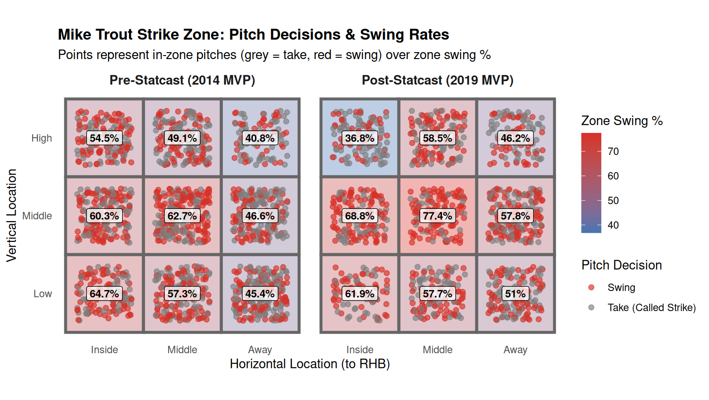
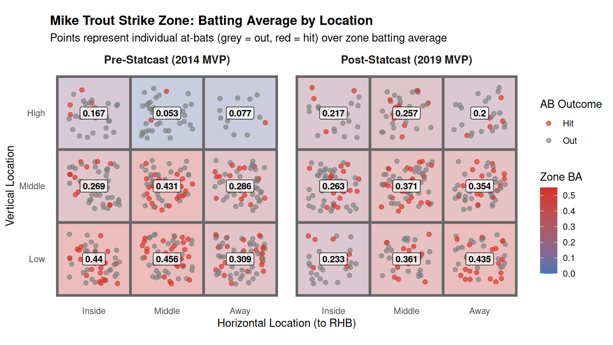
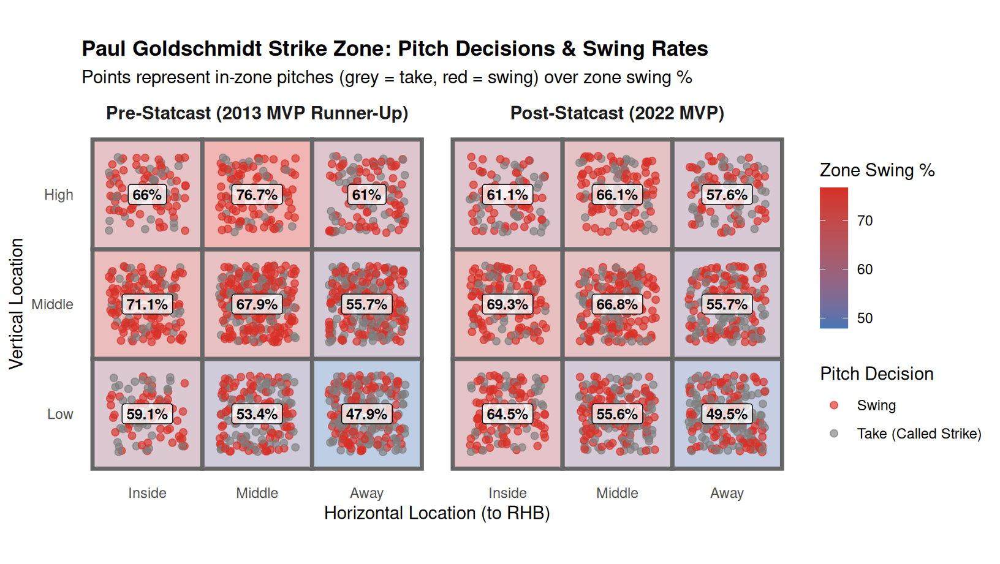
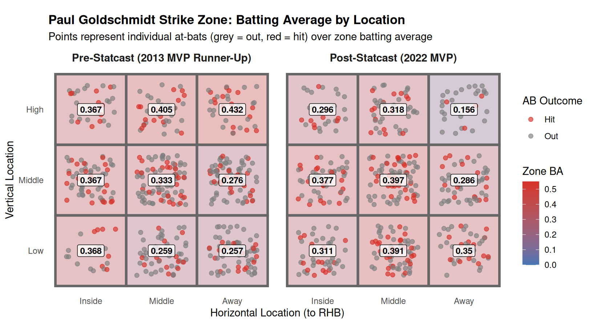
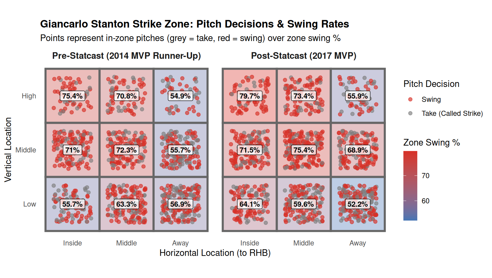
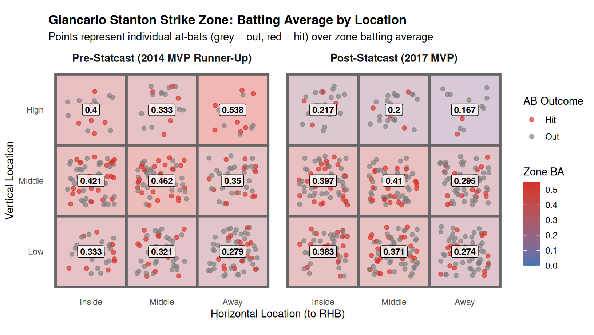

Players
Strike Zone Swing Rate: Mike Trout (Pre- vs. Post-Statcast MVP)
Analyzing Mike Trout’s strike zone swing rates between 2014 and 2019 reveals how granular tracking data refined modern plate discipline. As pitch-tracking systems like Statcast provided hitters with detailed heat maps of their run production, hitters learned to become hyper-selective—focusing swings on pitches in the heart of the zone where they do maximum damage, while laying off pitcher-friendly edge locations. In 2014, Trout was relatively balanced across the zone, swinging at 62.7% of pitches over the middle and 54.5% in the upper-inside corner. By his 2019 MVP season, his swing rate in the heart of the plate climbed to 77.4%, while he cut down his swings in the upper-inside quadrant to just 36.8%.
Between 2014 and 2019, Trout dialed his aggression into the middle of the plate—increasing his swing rate in the heart of the zone from 62.7% to 77.4%—while being far more patient on elevated inside pitches (dropping from 54.5% to 36.8%).
Mike Trout: Batting Average by Strike Zone Location
While swing rates illustrate where a hitter chooses to swing, batting average by zone reveals where those swings actually produce hits. In 2014, Trout was lethal in the lower and middle regions of the zone (hitting .456 low-middle, .440 low-inside, and .431 in the heart), but struggled on elevated pitches, batting just .053 up-middle. By 2019, Trout dramatically improved his coverage of high pitches—raising his up-middle batting average to .257—while hitting .435 on pitches low-away.

Strike Zone Swing Rate: Paul Goldschmidt (Pre- vs. Post-Statcast MVP)
Paul Goldschmidt provides a compelling look at how an elite slugger adapted his swing decisions across nearly a decade of pitch tracking. In his 2013 breakout season with the Arizona Diamondbacks (where he was the NL MVP runner-up), Goldschmidt was particularly eager to attack pitches elevated in the zone, recording a 76.7% swing rate in the upper-middle quadrant and 71.1% mid-in. By his 2022 NL MVP campaign with the St. Louis Cardinals, Goldschmidt adopted a more balanced approach—maintaining a 66.8% swing rate in the heart of the zone while becoming more selective on low and away pitches (49.5% swing rate).

Comparing his 2013 and 2022 seasons reveals how Goldschmidt developed a patient, disciplined approach across the strike zone—remaining aggressive in the heart (66.8%) while cutting swings on outer-edge chase zones.
Paul Goldschmidt: Batting Average by Strike Zone Location
Examining Goldschmidt’s batting average by zone highlights his shift from a high-ball hitter in Arizona to an all-fields, lower-zone punisher in St. Louis. In his 2013 season, Goldschmidt crushed pitches in the upper third of the strike zone, hitting .432 up-and-away and .405 up-middle. In his 2022 NL MVP campaign, pitchers combated his high-ball power, forcing Goldschmidt to adjust down—where he batted .397 in the heart, .391 low-middle, and .350 low-and-away.

Strike Zone Swing Rate: Giancarlo Stanton (Pre- vs. Post-Statcast MVP)
Giancarlo Stanton’s historical power in his 59-home-run 2017 MVP season highlights his willingness to do damage on hittable pitches across the zone. In 2014, when Stanton finished as the NL MVP runner-up, he attacked pitches inside and over the heart aggressively (72.3% in the center and 75.4% up-and-in), while swinging on 56.9% of low-away pitches. By 2017, Stanton became even more aggressive on pitches up in the zone, swinging at an overwhelming 79.7% of up-and-in pitches and 75.4% in the heart, while laying off pitches low-and-away (52.2% swing rate).

Comparing Stanton’s 2014 and 2017 campaigns shows his aggressive upper-zone coverage—driving his up-and-in swing rate close to 80% while cutting down on chase swings low and away.
Giancarlo Stanton: Batting Average by Strike Zone Location
Looking at Stanton’s batting average by zone illustrates how pitchers attacked him differently between his two MVP-caliber seasons. In 2014, Stanton punished mistake pitches across the upper quadrant, batting .538 up-and-away and .400 up-and-in, alongside a .462 mark in the heart. In his 2017 MVP season, pitchers combated his power with elevated velocity at the top of the zone (holding him to .200 up-middle and .217 up-in). Stanton compensated by doing immense damage on pitches down in the zone—batting .383 low-inside and .371 low-middle while crushing .410 in the heart.
